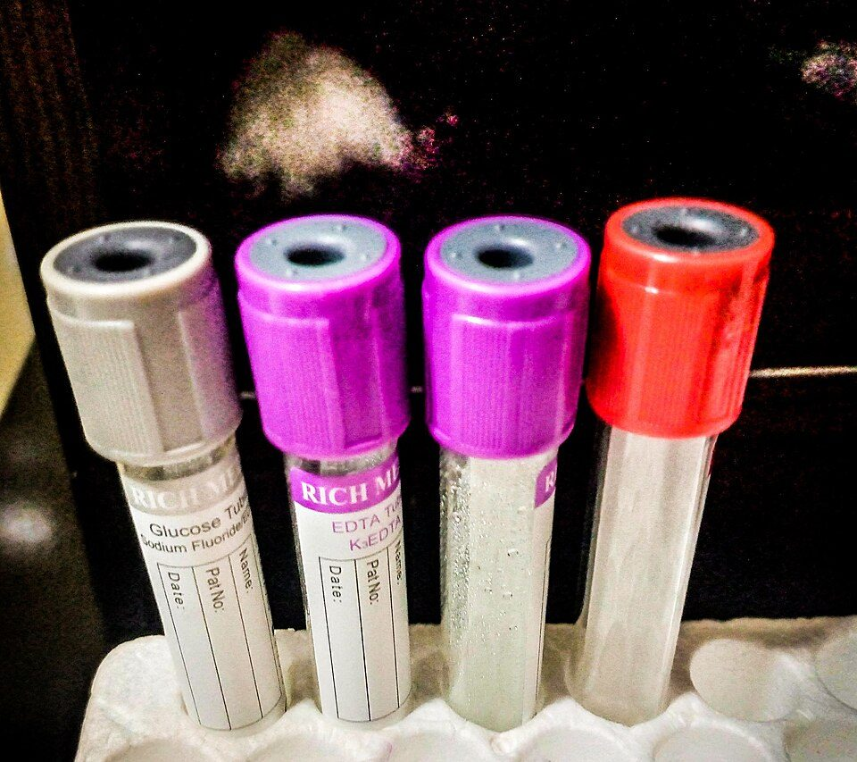

General information only. It does not replace advice from your care team and should not be used to choose a treatment.


What tumour markers are
Substances, almost always proteins, measured in the blood that may be raised in some cancers. The best known:
| Marker | Tumours where it is used |
|---|---|
| PSA | Prostate |
| CEA | Colorectal, and others |
| CA 19-9 | Pancreas, bile ducts |
| CA-125 | Ovary |
| CA 15-3 | Breast |
| Alpha-fetoprotein (AFP) | Liver, testicle |
| Beta-hCG | Testicle, trophoblastic tumours |
What they are and are not for
- They cannot rule cancer in or out on their own. They can be raised for benign reasons (inflammation, smoking, liver or kidney problems, periods, an enlarged prostate) and can be normal with cancer.
- They are not recommended as a "check-up" in people without symptoms, except PSA after an informed decision. An abnormal value for no reason causes anxiety and unnecessary tests.
- They are useful for follow-up of some cancers already diagnosed (for example, CEA after surgery for bowel cancer) and to assess response to treatment. In testicular cancer they also help with diagnosis and outlook.
Liquid biopsy
Tumour cells release fragments of their DNA into the blood (circulating tumour DNA). Detecting them makes it possible to:
- Study the tumour's changes without another biopsy, for example in advanced lung cancer when there is not enough tissue, or to see why a treatment has stopped working.
- Detect residual disease after surgery in some tumours, such as colorectal cancer. Research is looking at whether it can decide who needs adjuvant chemotherapy.
- Detect several cancers at once in healthy people (so-called MCED tests). This is still research: it is not yet known whether they reduce deaths, and they can give false positives and negatives.
A negative result does not always rule out disease, because some tumours release very little DNA.
See also: Biomarkers and molecular profiling, Prostate cancer.
Sources
- NCI. Tumor markers. cancer.gov
- Tie J, et al. Circulating tumor DNA analysis guiding adjuvant therapy in stage II colon cancer (DYNAMIC). N Engl J Med. 2022;386:2261-2272. doi:10.1056/NEJMoa2200075
- Pascual J, et al. ESMO recommendations on the use of circulating tumour DNA assays for patients with cancer. Ann Oncol. 2022;33:750-768. doi:10.1016/j.annonc.2022.05.520